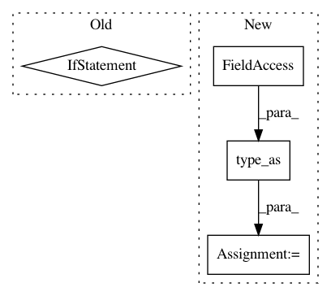

625451ab74f1942eb951337554d72005076a51b3,onmt/Translator.py,Translator,translateBatch,#Translator#Any#Any#,95
Before Change
batch_size = batch.batch_size
// (1) Run the encoder on the src.
if hasattr(batch, "src"):
_, src_lengths = batch.src
src = onmt.IO.make_features(batch, "src")
elif hasattr(batch, "src_img"):
src = onmt.IO.make_features(batch, "src_img")
src_lengths = None
elif hasattr(batch, "src_audio"):
src = onmt.IO.make_features(batch, "src_audio")
src_lengths = None
encStates, context = self.model.encoder(src, src_lengths)
decStates = self.model.decoder.init_decoder_state(
src, context, encStates)
After Change
src, context, encStates)
if src_lengths is None:
src_lengths = torch.Tensor(batch_size).type_as(context.data)\
.long()\
.fill_(context.size(0))
// (1b) Initialize for the decoder.
def var(a): return Variable(a, volatile=True)
In pattern: SUPERPATTERN
Frequency: 3
Non-data size: 4
Instances
Project Name: OpenNMT/OpenNMT-py
Commit Name: 625451ab74f1942eb951337554d72005076a51b3
Time: 2017-12-12
Author: dengyuntian@gmail.com
File Name: onmt/Translator.py
Class Name: Translator
Method Name: translateBatch
Project Name: elbayadm/attn2d
Commit Name: 27568a7ebed1a35f08ac0390f35b3de9b8dad0dd
Time: 2019-11-13
Author: myleott@fb.com
File Name: fairseq/models/levenshtein_transformer.py
Class Name: LevenshteinTransformerModel
Method Name: initialize_output_tokens